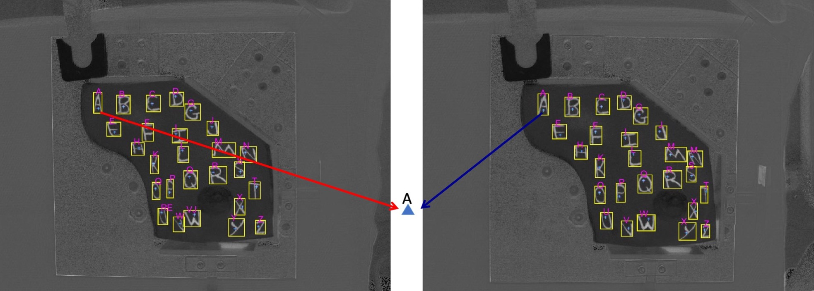

Computer Vision for Breast Conserving Surgery
Character based fiducials can be used to track points on the breast surface. These surface points are incorporated to a four-panel guidance display that shows a surgeon where their tools are with respect to preoperative supine Magnetic Resonance (MR) Images, tracked ultrasound images, and a model view of the breast and tumor.
A surgeon can write on a patients skin with an indellible marker to create fiducials that are easily sterilized, can remain on the skin throughout surgery, and can be tracked to provide data to a continuously updating image guidance system.
In 2018, we showed that breast surface points could be automatically tracked using a stereo vision system.
- W.L. Richey, M. Luo, S. E. Goodale, L. W. Clements, I. M. Meszoely, and M. I. Miga, "A system for automatic monitoring of surgical instruments and dynamic, non-rigid surface deformations in breast cancer surgery," in Medical Imaging 2018: Image-Guided Procedures, Robotic Interventions, and Modeling, 2018, vol. 10576, p. 105761H: International Society for Optics and Photonics.
In 2020 we showed that a simple program can identify character fiducials with 89% accuracy using the MATLAB built in optical character recognition function, and an average of 81% of points can be accurately labeled and localized even across multiple skin tones. We also compared the accuracy of our stereo camera system to conventional optically tracked stylus points.
- W. L. Richey, J.S. Heiselman, M. Luo, I. M. Meszoely, and M. I. Miga, "Textual fiducial detection in breast conserving surgery for a near-real time image guidance system," in Medical Imaging 2020: Image-Guided Procedures, Robotic Interventions, and Modeling, 2020, vol. 11315, p. 113151L: International Society for Optics and Photonics.